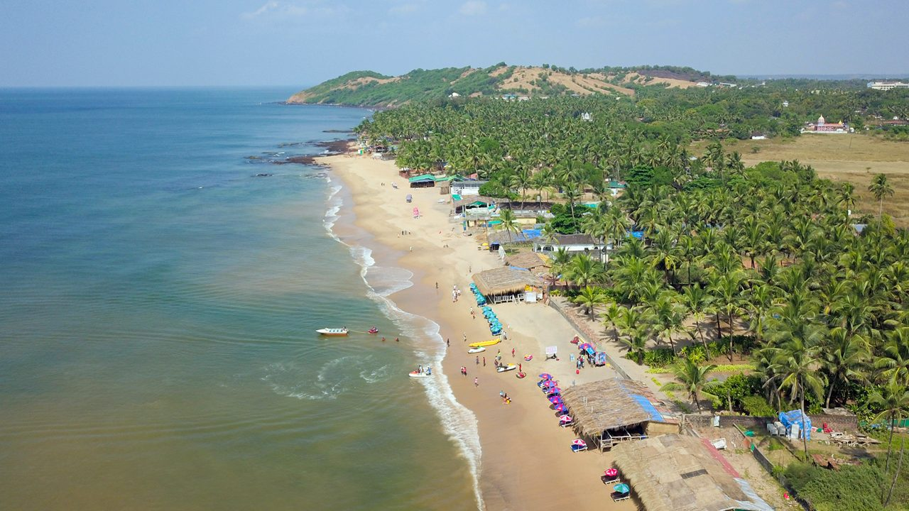
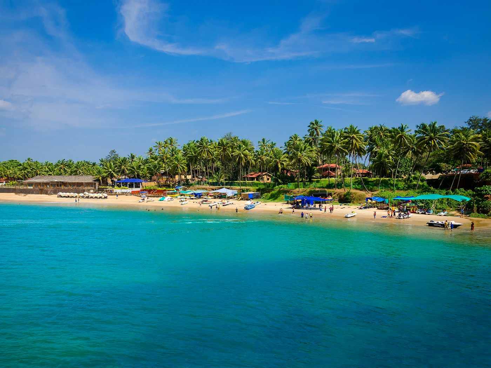

THE COASTAL LIFE
Anjuna Beach
Salty air. Barefoot afternoons.

INDIA’S LITTLE COASTAL ESCAPE
Salt in the air and in the water. Sunshine on your skin.
Come for the coast. Stay for the feeling.
YOUR SAMPLE ESCAPE
A little inspiration to get started. Adjust the pace, travel time, and stops to suit your stay.
MANY SIDES. ONE BEAUTIFUL GOA.
Beyond the postcards, there’s a Goa for every mood.
Where will you find yours?

MORE THAN A PLACE. A FEELING.
The best of Goa isn’t always on an itinerary. Sometimes, it’s what you find along the way.
Discover coconut-rich curries, fresh local flavors, and a slice of bebinca to finish.
Walk through colorful lanes, pause at a neighborhood café, and let the afternoon unfold.
A book, a sea breeze, and nowhere you need to be. Some plans are better left open.
A FEW THINGS BEFORE YOU GO
A few thoughtful choices make room for a better escape.
Keep Goa beautiful and vibrant and nice.
Leave only sandy footprints.
YOUR OUT-OF-OFFICE STATE OF MIND
Your next favorite memory is waiting on the coast.
Let’s go to Goa